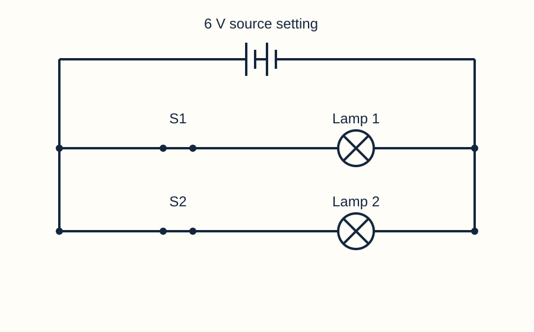

Predict independently. Give a reason in your book.
Draw in your book or this printed space. You may also use the simulator symbol view, save your circuit and explain the connections, or direct a scribe.
Two lamps are in the same steady loop. Does the second receive less current because the first used some?
Model answer & mark scheme
No. The same steady current passes both lamps. Energy is transferred at each lamp; current is not consumed.
Success criteria: Equal series current and an energy/charge distinction.
Draw the ammeter symbol and say where it connects.
Model answer & mark scheme
A circle containing A; in series along the path being measured.
Success criteria: Correct symbol and connection.

One acceptable schematic; component positions may differ if the connections match.
Support and a way to start
Trace the single loop.
Recall what circulated in L2.
State your prediction and reason.
Both lamps carry ___ because ___.
Use the symbol reference, large symbols or a pupil-directed scribe. A clear connection matters more than a perfectly straight line.
Series
Components in one path.
Current
Rate of charge flow.
Stretch & challenge
Can identical lamps in series be dimmer while still having the same current as each other?
Model answer & success criteria
Yes. The total loop current is lower than with one lamp, but it is the same through both lamps. Each identical lamp then has less power than the original single lamp.
Success: a clear judgement supported by the relevant circuit path, model or measured evidence.
2. Today: design lights that keep working
Read the goals. Identify what your design must do.
LO1 · Construct and draw series and parallel circuits, identifying paths and junctions.
LO2 · Use readings to compare current in a single loop and at parallel branches.
LO3 · Explain how circuit arrangement and switch position affect lamps; justify an independently controlled design.
What evidence will show that two lights are independently controlled?
Model answer & mark scheme
Four tests: both on, only light 1 on, only light 2 on and both off. Each switch must control its own lamp.
Success criteria: All four combinations and independent control.
Support and a way to start
Name both lamps.
Imagine switching only one off.
Say what evidence you need.
Our design succeeds if ___ while ___.
Rehearse aloud. Point to the diagram or direct a partner to record your words. Keep the same scientific explanation.
Independent control
Changing one light without having to change the other.
Stretch & challenge
Is a working circuit enough to prove a design meets its purpose?
Model answer & success criteria
No. It must be tested against the requirement. Two lamps lighting together does not show they can be controlled separately.
Success: a clear judgement supported by the relevant circuit path, model or measured evidence.
3. One path: a series circuit
Trace the path and predict a break.
Series components share one conducting path. Steady current is equal at all points in that path.
Adding a lamp in series increases total resistance. With the same source setting, current decreases.
For identical lamps, lower current means lower power and a dimmer lamp display. A gap anywhere in this loop stops both lamps.
Compare one 10 Ω lamp with two 10 Ω lamps in series at the same source setting.
Model answer & mark scheme
Two lamps give greater total resistance and lower current than one. Each of the two identical lamps has lower power, so each is dimmer. Their currents are equal to each other.
Success criteria: Control the source; compare one/two lamps; equal current within the two-lamp loop.
Remove a wire from either lamp. What happens to the other?
Model answer & mark scheme
It goes out because the only conducting path is broken.
Success criteria: Predict off and explain the single broken path.
Support and a way to start
Count complete paths.
Follow each lamp in order.
Imagine a gap in the only path.
There is ___ path, so a break at ___ causes ___.
Rehearse aloud. Point to the diagram or direct a partner to record your words. Keep the same scientific explanation.
Resistance
Opposition to current.
Power
Energy transferred each second.
Stretch & challenge
Would moving one lamp to the top of the drawing change a series circuit into parallel?
Model answer & success criteria
No. The connections and number of paths define the arrangement, not where the symbols are drawn.
Success: a clear judgement supported by the relevant circuit path, model or measured evidence.
4. More than one path: parallel
Point to the junctions and follow both branches.
A junction is where paths split or rejoin. Parallel branches connect across the same two supply sides.
Supply current divides between branches and recombines: supply current equals the sum of branch currents.
A gap in one lamp branch can leave another branch complete. A gap in the common supply path stops both.
A supply current is 0.90 A. One branch carries 0.35 A. Find the other branch current.
Model answer & mark scheme
0.90 − 0.35 = 0.55 A. The branch currents add to the supply current.
Success criteria: Correct subtraction and A.
Explain why opening a branch differs from opening the common supply path.
Model answer & mark scheme
Opening one branch breaks only its path. Opening the common supply path removes the complete route through the source for every branch.
Success criteria: Distinguish the two positions and their effects.
Support and a way to start
Find where the path splits.
Trace lamp 1, then lamp 2.
Add branch currents to compare with the supply.
At the junction, ___ A = ___ A + ___ A.
Rehearse aloud. Point to the diagram or direct a partner to record your words. Keep the same scientific explanation.
Branch
One route between junctions.
Junction
Where paths split or rejoin.
Stretch & challenge
Must current divide equally at every junction?
Model answer & success criteria
No. Branch resistance affects the split. Equal currents are expected for equivalent branches; unequal branches can carry different currents while still adding to the supply current.
Success: a clear judgement supported by the relevant circuit path, model or measured evidence.
5. Set up a comparison you can trust
Watch the first reading. Identify what stays fixed.
Use a 6 V source setting and identical 10 Ω lamps. Start with one lamp, then two in series, then two in parallel.
Record supply current and each lamp’s current and power. Power gives a more precise comparison than the glow alone.
Select each part to read its values. If you add ammeters, insert them along the measured path.
Why keep the lamp resistance and source setting the same?
Model answer & mark scheme
So differences can be linked to arrangement or lamp number, rather than different components or supply settings.
Success criteria: Identify the comparison and controlled variables.
Why record lamp power as well as brightness?
Model answer & mark scheme
The glow is an illustrative display that can saturate. Power is a calculated numerical value for energy transferred each second.
We change ___. We measure ___. We keep ___ the same.
Choose builder, connection director or recorder. Use the starter circuit if needed. Read one value at a time; a partner may type your dictated values.
Variable
Something that can change.
Watt (W)
The unit of power.
Stretch & challenge
What would be wrong with comparing a 3 V series circuit with a 6 V parallel circuit?
Model answer & success criteria
Two variables change at once: source setting and arrangement. The result cannot isolate the effect of arrangement.
Success: a clear judgement supported by the relevant circuit path, model or measured evidence.
6. Build, compare, then break a branch
Use the comparison sheet. Take turns building and recording.
Use One loop, two lamps, then Keep the lights on. Save a reading for each arrangement.
For the series circuit, remove one lamp wire; record what happens. Restore it.
For parallel, remove a wire only from the second lamp’s branch. Record the remaining lamp and supply current.
Compare the one-lamp, series and parallel readings.
Model answer & mark scheme
Typical 6 V / 10 Ω example magnitudes: one lamp ≈0.594 A and 3.526 W; series ≈0.298 A through each and 0.891 W each; parallel ≈0.588 A per branch, supply ≈1.175 A and ≈3.455 W per lamp. Small differences follow lead/source resistance.
Success criteria: Record actual readings with units; equal series currents; branch currents sum; series lamps dimmer.
What did each disconnection show?
Model answer & mark scheme
Series: both lamps off, because the single loop is broken. Parallel branch break: that lamp off, the other still on, because its path remains complete. The remaining current may rise slightly as source losses fall.
Success criteria: Both observations and path explanations, without claiming every parallel reading stays exactly fixed.
Support and a way to start
Use the example selector for each arrangement.
Save the reading before changing a wire.
Label the circuit and which branch was opened.
In ___, I measured ___. After removing ___, the other lamp ___ because ___.
Choose builder, connection director or recorder. Use the starter circuit if needed. Read one value at a time; a partner may type your dictated values.
Supply current
Current provided through the common supply path.
Stretch & challenge
Why might the remaining parallel lamp become very slightly brighter after a branch is disconnected?
Model answer & success criteria
The total source current falls, so the internal voltage loss in the model source becomes smaller. The remaining branch can receive a slightly higher terminal voltage. This qualifies the ideal constant-voltage model.
Success: a clear judgement supported by the relevant circuit path, model or measured evidence.
7. Where must the current go?
Choose a letter and justify it using the paths.
0.10 A, the difference.
0.25 A, the average.
0.50 A, the sum.
0 A, the lamps used it.
Two parallel branches carry 0.20 A and 0.30 A. What current returns to the source?
Model answer & mark scheme
C: 0.50 A. The branch currents recombine at the junction.
Success criteria: 1 mark correct value; 1 mark branch-current addition.
A supply current is 0.80 A and one branch carries 0.35 A. What is the other branch current?
Model answer & mark scheme
0.45 A, because 0.35 + 0.45 = 0.80 A.
Success criteria: Correct changed-context response with a scientific reason.
Support and a way to start
Read both branch values.
Imagine the paths rejoining.
Choose and give a reason.
The return current is ___ because ___.
Rehearse aloud. Point to the diagram or direct a partner to record your words. Keep the same scientific explanation.
Recombine
Join again.
Stretch & challenge
If one branch current is zero, what does that tell you about the supply current?
Model answer & success criteria
With only the other branch conducting, the supply current equals that remaining branch current. Its value may differ slightly from before because the source has internal resistance.
Success: a clear judgement supported by the relevant circuit path, model or measured evidence.
8. Choose where each switch belongs
Sketch a plan before touching the simulator.
Brief: a reading light and entrance light share one battery. Either light must work while the other is off.
A switch in the common supply path controls every branch. A switch inside one lamp branch controls that branch.
Use the same two lamp resistances and source setting as your comparison.
Where should two switches go to meet the brief?
Model answer & mark scheme
Use two parallel branches. Put a switch in series with its lamp inside each branch.
Success criteria: Two complete branches with one switch per lamp.
Why does one common switch fail the brief?
Model answer & mark scheme
It only switches both lamps together; it cannot select one lamp independently.
Success criteria: Link its position to the requirement.
Support and a way to start
Name reading and entrance lamps.
Trace a separate path through each.
Choose a switch position within each path.
I place switch ___ in ___ because ___.
Use the symbol reference, large symbols or a pupil-directed scribe. A clear connection matters more than a perfectly straight line.
Design constraint
A requirement the solution must meet.
Stretch & challenge
Could you keep a common master switch as well as two branch switches?
Model answer & success criteria
Yes. The master switch turns all lights off, and when it is closed the branch switches allow independent control. This uses an extra switch beyond the core two-switch brief.
Success: a clear judgement supported by the relevant circuit path, model or measured evidence.
9. STEM: prove the shelter design
One pupil builds; the other tests the requirement. Then swap.
Open The shelter challenge. Build two switched lamp branches, or use the scaffolded starter.
Test on/on, on/off, off/on and off/off. Record supply current and whether each lamp has non-zero power.
Each pupil explains one test that proves independent control. Save the lab.
Complete the four-test matrix.
Model answer & mark scheme
Both switches closed: both lamps on. Only S1 closed: lamp 1 on and lamp 2 off. Only S2 closed: lamp 1 off and lamp 2 on. Both open: both lamps off and supply current 0 A.
Success criteria: Four correct states; real recorded values and units; no unintended bypass.
Recommend the design using the evidence.
Model answer & mark scheme
Use two parallel branches, each with its own series switch. The two mixed switch tests show either light stays on independently, meeting the shelter requirement.
Success criteria: Design choice, relevant test evidence and reason.
Support and a way to start
Load the starter if connections are a barrier.
Change only one switch at a time.
Use the ready-made four-row table.
When S1 was ___ and S2 was ___, lamp 1 ___ and lamp 2 ___. This meets ___ because ___.
Choose builder, connection director or recorder. Use the starter circuit if needed. Read one value at a time; a partner may type your dictated values.
Test matrix
A table of the conditions tested.
Stretch & challenge
Why are only the both-on and both-off tests insufficient?
Model answer & success criteria
Both tests would also pass with a common switch or some incorrect designs. The mixed on/off and off/on tests demonstrate independent control.
Success: a clear judgement supported by the relevant circuit path, model or measured evidence.
10. Explain a different lighting fault
Work individually. Use paths and current in your answer.
Draw in your book or this printed space. You may also use the simulator symbol view, save your circuit and explain the connections, or direct a scribe.
Two model corridor lights are in series. One connection breaks. Explain both lamps’ behaviour. (2 marks)
Model answer & mark scheme
Both go out: the break interrupts the only complete path, so current stops through both.
Mark scheme (original classroom question): 1 both off; 1 single broken path / no current.
Redesign the circuit so a break in one lamp branch leaves the other working. Draw and explain. (3 marks)
Model answer & mark scheme
Draw two lamp branches in parallel across the source with correct junctions. Each has its own complete path, so opening one branch leaves the other complete.